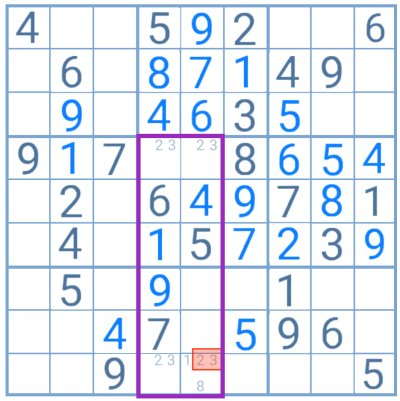

retangulo de exclusividade de tipo 1
Os puzzles de Sudoku apenas podem ter uma solução. No entanto, nos níveis de dificuldade mais extremos, o jogador pode terminar a tabelas com duas. Esta situação ocorre quando existe um padrão fechado, o que em inglês se denomina “deadly pattern”, ou seja, quatro células com pares de candidatos iguais, frente a frente em dois grupos concorrentes. Neste caso, existem duas possíveis soluções já que a escolha dos dígitos é aleatória.
Para evitar ter múltiplas soluções é necessário aplicar a estratégia do retângulo de exclusividade. Quando se desenhe um padrão fechado durante o jogo, o jogador deve de imediato verificar se existem mais candidatos nessas quatro células. Se sim, deve eliminar os dígitos “problemáticos”.
Nesta tabela, o jogador está perante a possibilidade de terminar o puzzle com um padrão fechado com as células que contêm os dígitos 3 e 4. No entanto, como o 8 é candidato numa delas, pode aplicar o método do retângulo de exclusividade eliminando o par 3/4 da mesma e deixando apenas o 8 nesta.
Em teoria, o método do retângulo de exclusividade é (ou deveria ser) o menos utilizado das estratégias avançadas de Sudoku já que este padrão fechado apenas ocorre em puzzles mal concebidos, ainda que não totalmente errados.
nishio
De todas as estratégias avançadas do Sudoku, esta é utilizada normalmente como último recurso já que implica adivinhar a solução até um certo ponto.
A técnica é simples. O jogador deve selecionar uma casa com apenas dois candidatos, escolher um dos dígitos e tentar solucionar a tabela. Se conseguir, ótimo. Se não, deve regressar ao ponto de partida e escolher o outro dígito.
A ideia por detrás desta técnica é a de que, assim que se encontra uma incompatibilidade, o jogador pode eliminar o dígito com o qual está a trabalhar e terá encontrado a solução para a célula inicial com dois candidatos.
Contudo, um simples erro por falta de concentração pode tornar o puzzle impossível de resolver. Além disso, a incompatibilidade pode surgir apenas no fim e levar o jogador a perder tempo e a esforçar-se em vão. Por estas razões, a maioria dos jogadores tende a evitar utilizar esta estratégia.
A teoria por detrás das estratégias avançadas de Sudoku é relativamente fácil de entender e de aplicar. O mais complicado é encontrar os padrões corretos e saber que técnica utilizar em cada caso. Contudo, qualquer jogador que deseje enfrentar os níveis mais difíceis e extremos de dificuldade do Sudoku terá de estar bem familiarizado com estas estratégias uma vez que elas se tornam em requisitos para solucionar os puzzles nestes níveis.
Com isso pessoal, resolvemos 99,9% dos quebra-cabeças. Os outros 0,1% são aqueles que, como o sudoku mais difícil do mundo, não podem ser resolvidos somente com a lógica e, portanto, são CHATOS! :-P